사회조사분석사-2급 (2001-09-23 기출문제)
1과목: 조사방법론 I
1. 문항 상호간의 일관성을 측정하는 방법으로 크론바하 를 계산하기도 한다. 크론바하 에 관한 설명 중 잘못된 것은?
- 표준화된 알파라고 부르기도 한다.
- 값의 범위는 - 1에서 + 1까지이다.
- 문항간 평균상관관계가 증가할수록 값이 커진다.
- 문항의 수가 증가할수록 값이 커진다.
(정답률: 알수없음)

2. 기술적(desc riptive) 연구의 목적으로 가장 적합한 것은?
- 가설의 검증
- 이론의 확인
- 인과관계의 규명
- 현상의 정확한 묘사
(정답률: 알수없음)
3. 서스톤 척도법(Thurstone scale)에 대한 다음의 설명 중 틀린 것은?
- 리커트 척도법이나 거트만 척도법에 비해, 서스톤 척도법은 상당한 비용과 시간이 걸린다는 단점을 가지고 있다.
- 리커트 척도법이나 거트만 척도법의 경우는 구간 수준(interval level)의측정이 가능하지만, 서스톤 척도법은 서열 수준(ordinal level)의 측정만이 가능하다.
- 평가자의 편견이 개입될 가능성이 있으며, 이 문제를 완화하기 위해서는 가능하면 많은 수의 평가자를 선정하는 것이 좋다.
- 문항의 선정 과정에 평가자 간에 이견이 큰 문항은 제의한다.
(정답률: 알수없음)
4. 사회조사의 과정(절차)을 단계별로 나타낸 것 중 가장 타당한 것은?
- 자료수집- 문제설정- 자료분석- 가설설정- 연구설계- 분석결과해석
- 문제설정- 가설설정- 연구설계- 자료수집- 자료분석- 분석결과해석
- 가설설정- 연구설계- 문제설정- 자료수집- 자료분석- 분석결과해석
- 연구설계- 문제설정- 자료수집- 자료분석- 가설설정- 분석결과해석
(정답률: 알수없음)
5. 다음중 면접조사의 장점이 아닌 것은?
- 회수율이 높다.
- 조사에 융통성이 있다.
- 익명성을 보장할 수 있다.
- 응답자의 교육수준에 관계없이 가능하다.
(정답률: 84%)
6. 다수의 대상자를 하나의 집단으로 면접하여 자료를 수집하는 방법으로, 집단으로 하여금 자유로운 대화나 토론을 하게 하여 자유로운 대화나 토론을 하게 하여 문제점을 찾아내고 그 해결책 등을 찾아나가는데 사용되는 것은?
- 집단면접조사(group interview)
- 집단질문지조사(group questionnaire survey)
- 집중면접(focused interview)
- 임상면접(clinical interview)
(정답률: 42%)
7. 확률표본추출방법에 관한 설명 중 틀린 것은?
- 표본오차의 추정이 가능하다.
- 시간과 비용이 많이 든다.
- 연구대상이 표본으로 추출될 확률이 알려져 있다.
- 연구대상이 표본으로 추출될 확률이 모두 동일하다.
(정답률: 25%)
8. 측정도구의 타당도와 신뢰도에 대한 설명 중 맞는 것은?
- 측정값 = 참값 + 확률오차 + 체계오차
- 체계오차 = 0, 확률오차 ≠ 0 인 경우, 측정도구는 신뢰할 수 있지만 타당하지 않다.
- 확률오차 = 0 , 체계오차 ≠ 0 인 경우, 측정도구는 타당하지만 신뢰할수 없다.
- 측정오차는 체계오차의 부분도 포함되는데 이는 신뢰도와 관계가 있다.
(정답률: 19%)
9. 어떤 개념을 측정하기 위해 여러 개의 문항으로 이루어진 척도(scale)를 사용하는 이유에 해당하는 사항들을 제대로 모아 놓은 것은?
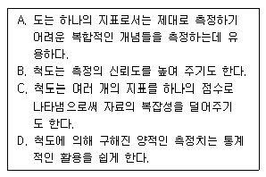
- A, B, C
- A, C, D
- A, B, D
- A, B, C, D
(정답률: 알수없음)
10. 비례층화표본표집의 특징을 가장 정확하게 설명한 것은?
- 각층의 인구를 하나의 소규모 모집단으로 간주하고, 각층의 모집단 인구규모에 비례하여 표집한다.
- 지역 또는 연령분포에 따라 조사대상인구를 저울질한다.
- 각층별로 표집은 하되 무작위로 조사대상자를 선정한다.
- 각층의 모집단인구에 연령에 따라 각기 상이한 표본표집률을 적용한다.
(정답률: 알수없음)
11. 신뢰도를 평가하는 방법 중의 하나로 재조사법(test- retest method)이 있다. 이 재조사법을 실제 사용하기 위해서, 혹은 사용했을 때 발생하는 한계에 해당하지 않은 것은?
- 사회현상들은 한 시점에서밖에 측정되지 못하고 있다.
- 두 시점간의 실제 변화를 파악할 수 없다.
- 두 번째 시점의 측정은 첫 번째 시점에서 이루어진 측정의 영향을 받을 수 있다.
- 측정항목(설문조항)이 많을 경우에만 가능하다.
(정답률: 알수없음)
12. 집합단위의 자료를 바탕으로 개인의 특성을 추리할 때 저지르기 쉬운 오류는?
- 생태학적 오류
- 제1종 오류
- 개인주의적 오류
- 제3종 오류
(정답률: 알수없음)
13. 대학수학능력시험(수능)은 대학에서 공부할 수 있는 능력을 측정하기 위해서 치루어진다. 따라서 이론적으로 볼 때 수능 점수가 높은 사람은 대학에서도 높은 학점을 받을 것으로 예측할 수 있다. 수능시험의 타당도를 평가하기 위한 방법으로서, 수 년간에 걸쳐 학생 개개인의 입학시 수능 점수와 입학 후 첫 학년도 평균학점간의 상관계수(corre lation coefficients)를 살펴보았다면, 이는 다음 중 어느 것과 가장 밀접한 연관이 있는가?
- 표면 타당도(face validity)
- 내용 타당도(content validity)
- 동시적 타당도(concurrent validity)
- 구성체 타당도(construct validity)
(정답률: 20%)
14. 측정과 관련된 다음 사항 중 적절하지 못한 것은?
- 측정은 관찰된 현상의 경험적인 속성(변수)에 대해 일정한 규칙에 따라 수치나 이름을 부여하는 과정이라고 볼 수 있다.
- 측정은 이론과 경험적 사실을 연결시켜주는 고리로서 사실과 가장 가까운 위치에 있으면서 이론을 경험적으로 검증하게 해주는 수단이 된다.
- 추상적인 개념을 측정하는 경우, 개념적 정의(conce tualization) 과정과 조작적 정의과정(operationalization) 과정을 통해 실제 측정가능한 개념으로 전환된다.
- 일반적으로 자연과학적 현상에 비해 사회과학적 현상을 측정하기가 훨씬 쉽고 또한 논란의 여지도 적다고 볼 수 있다.
(정답률: 알수없음)
15. 아래의 설문 문항은 질문지의 작성요령에 있어 다음 중 어떤 문제점이 있는가?
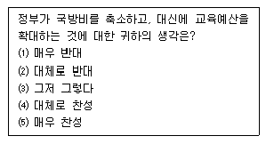
- 질문의 모호성(ambiguity)
- 복합적 질문(double - barreled question)
- 유도성 질문(leading question)
- 질문의 민감성(sensitivity)
(정답률: 알수없음)
16. 우편조사의 단점은 무엇인가?
- 응답율이 낮다.
- 많은 비용이 든다.
- 넓은 지역을 조사할 수 있다.
- 많은 사람들을 표본으로 삼을 수 없다.
(정답률: 알수없음)
17. 조사대상이 지리적으로 광범위하게 흩어져 있는 전국민인 경우, 표집 단위를 여러개로 분할하여 한정된 지역에서 표집하는 방법은?
- 집락표집
- 할당표집
- 계통표집
- 층화표집
(정답률: 알수없음)
18. 사후실험(Ex- Post Facto Experiment) 설계의 특성과 관계없는 것은?
- 결과가 이미 발생했을 때, 결과가 나타나게된 원인을 추적하여 알아내는 방법이다.
- 독립변수에 대한 통제가 윤리적으로 바람직하지 않을 때 사용될 수 있다.
- 일반적인 실험설계보다 종속변수에 영향을 줄 수 있는 변수의 통제가 용이하다.
- 실제상황에서 검증하기 때문에 일반적인 실험설계에 비해서 현실성이 높은 결과를 얻을 수 있다.
(정답률: 알수없음)
19. 표본오차는 표본을 추출할 때 발생하는 확률적 현상이다. 일반적으로 표본오차에 영향을 주는 요인으로 알려진 것으로만 짝지어진 것은?
- 표집법 !- 모집단의 특성 - 조사비용
- 조사비용 - 조사목적 - 모집단의 특성
- 표집법 - 모집단의 특성 - 표본의 크기
- 모집단의 특성 - 표본의 크기 - 조사비용
(정답률: 70%)
20. 대학생활 경험이 학생들의 성역할에 미치는 영향을 연구하기 위하여 대학에 갓 입학한 특정 신입생 표본을 미리 선정, 일정한 시간 간격을 두고 이들을 몇 차례에 걸쳐 조사를 실시하기로 하였다. 이와 같은 조사 유형은 어떤 형태의 조사연구가 되는가?
- 횡단적 연구
- 패널연구
- 추세연구
- 코호트연구
(정답률: 36%)
21. 온라인 사회조사(online survey)의 특성이 아닌 것은?
- 조사대상자를 조사에 응하게 만드는 유인요소가 있어야 한다.
- 중복응답의 가능성을 전혀 배제할 수 없다는 단점이 있다.
- 방법으로는 전자우편조사(e-mail survey), 웹조사(html form survey), 다운로드조사(downloada ble survey)의 세가지가 대표적 유형이다.
- 조사대상자에 따라 가입자조사, 회원조사, 방문자조사로 구분할 수 있다.
(정답률: 알수없음)
22. 질문작성시 응답범주의 구성 또는 배열에 대한 설명으로 타당하지 않은 것은?
- 응답범주는 상호배타적이어야 한다.
- 변수의 수준을 고려하여 구성한다.
- 명목척도의 경우 응답범주의 배열순서는 문제되지 않는다.
- 응답범주는 논리적 순서에 따라 배열한다.
(정답률: 46%)
23. 단순무작위표집법으로 표본을 표집할 때, 표본크기를 50 에서 100으로 늘렸다. 이 때 나타나는 효과와 가장 관련이 깊은 것은?
- 모집단의 평균값이 커진다.
- 추정치의 분산이 줄어든다.
- 표본평균과 표본최빈값이 일치한다.
- 아무런 효과가 없다.
(정답률: 알수없음)
24. 사회적 지위를 측정하는 지표로서 직업, 소득, 그리고 교육수준을 선택하고 각 측정치간의 상관계수를 통하여 타당도를 평가하는 방법은?
- 표면타당도
- 기준관련타당도
- 개념(구성체) 타당도
- 내적 타당도
(정답률: 알수없음)
25. 사회조사에서 어떤 태도를 측정하기 위해 단일지표보다 여러개의 지표를 사용하는 경우가 많다. 그 이유로서 틀린 것은?
- 신뢰도를 높이기 위해
- 타당도를 높이기 위해
- 내적일관성을 높이기 위해
- 측정도구의 안정성을 높이기 위해
(정답률: 50%)
26. 사전검사(prete s t)에 대한 다음 설명 중 틀린 것은?
- 본조사에서 사용하고자 하는 방법과 동일하게 한다.
- 응답대상자는 반드시 대표성을 가져야 한다.
- 질문들이 갖는 문제점을 찾아내어 명료하게 수정하기 위한 목적에서 행한다.
- 반드시 많은 수의 응답자를 상대로 실시할 필요는 없다.
(정답률: 알수없음)
27. 적절한 표본의 크기를 정하는 데 있어 관련이 적은 것은?
- 표본의 대표성을 유지하기 위한 최소한의 표본수는 구해져야 한다.
- 단순무작위표본추출법일 경우 다른 조건이 같다면, 모집단이 이질적일수록(즉 분산이 클수록) 표본수도 커야 한다.
- 통계적으로 표본의 크기를 결정하는데 있어서 모수추정치의 허용오차를 작게 설정할수록(즉 추정의 정확도를 높일수록) 표본의 크기는 커진다.
- 표본의 크기를 정하는 데 있어 조사에 가용한 자원이나 분석에서 사용될 변수나 변수범주를 고려할 필요는 없다.
(정답률: 70%)
28. 일반적으로 설문조사에서 많이 사용되는 대답항목인 ‘매우 좋다’, ‘약간 좋다’, ‘그저 그렇다’, ‘약간 싫다’, 매우 싫다 등의 5점 척도의 명칭은 무엇인가?
- 서스톤 척도
- 리커트 척도
- 거트만 척도
- 의미분화 척도
(정답률: 50%)
29. 다음 조사항목이 안고 있는 주된 문제는 무엇인가?
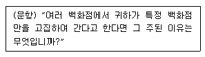
- 단어들의 뜻이 명확하지 않다.
- 하나의 항목에 두 가지 질문 내용이 포함되어 있다.
- 지나치게 자세한 응답을 요구하고 있다.
- 임의로 응답자들에 대한 가정을 두고 있다.
(정답률: 84%)
30. 다음 중 내적타당도 저해요인이 아닌 것은?
- 특정사건의 영향
- 피실험자의 변화에 따른 영향
- 사전검사의 영향
- 반작용 효과
(정답률: 55%)
2과목: 조사방법론 II
31. 다음 중 면접원의 준수사항과 거리가 먼 것은?
- 단정한 용모와 행동을 취한다.
- 질문을 문자 그대로 전달한다.
- 응답내용을 정확하게 기록한다.
- 응답이 불충분하더라도 부가질문은 자제한다.
(정답률: 60%)
32. 다음 중에서 가설설정에 유의할 사항과 관계없는 것은?
- 가설은 가치 중립적인 성질을 띠어야 한다.
- 가설은 검증 가능해야만 한다.
- 가설은 구체적인 성질의 것이어야 하며, 추상적인 의미를 담고 있을 수 있다.
- 가설은 추상적인 개념상의 정의든, 조작적 정의든 그 뜻이 명쾌하여야 한다.
(정답률: 60%)
33. 다음에서 질적 연구(Qualitative Research)에 해당하는 것은?
- 관찰조사
- 면접조사
- 질문지조사
- 실험조사
(정답률: 20%)
34. 전화조사에서 전화번호부를 사용한 체계적 표본추출방법과 관련이 없는 내용은?
- 유동인구가 많아 전화번호부에 등재되어 있지 않은 전화번호가 많은 경우 조사결과의 실효성이 감소한다.
- 이 같은 표본추출방법을 임의숫자 다이얼방법(random-digit dialing)이라고도 부른다.
- 조사에 소요되는 시간과 경비를 절약할 수 있다.
- 전화번호부에 등재되어 있는 전화번호 중에서 5번째, 10번째 또는 15번째 전화번호를 표집한다.
(정답률: 40%)
35. 다음의 리커트(Like rt) 척도법에 대한 설명 중 적절하지 않은 것은?
- 사용하기 쉽고, 직관적인 이해가 가능하기 때문에 사회조사에서 널리 사용된다.
- 척도점수에 대한 신뢰성을 검토하기 위해 반분법을 이용할 수 있다.
- 각 문항에 대한 가중치를 다르게 부여할 수 없다는 단점이 있다.
- 척도가 단일 차원을 측정하고 있는가를 검토하기 위하여 인자분석(factor analysis)을 사용하기도 한다.
(정답률: 20%)
36. 다음 중 질문지의 서두에 들어갈 질문내용으로 가장 부적합한 것은?
- 연구와 관련성이 적은 질문
- 응답하기 용이한 질문
- 폐쇄형 질문
- 흥미로운 질문
(정답률: 67%)
37. 폐쇄형 질문에서 응답범주와 관련한 설명 중 올바른 것은?
- 가능한 모든 응답을 제시해 주어야 한다.
- 정확한 의미전달을 위해 범주의 내용을 일부 중복시켜 주어야 한다.
- 응답범주를 설정할 단계에서는 분석기법을 고려하지 않는 것이 좋다.
- 중립적인 의견을 표시할 수 있는 범주는 반드시 포함시켜야 한다.
(정답률: 80%)
38. 속성이 전혀 존재하지 않는 상태인 영점(0)이 존재하는 척도는 무엇인가?
- 서열척도
- 비율척도
- 명목척도
- 등간척도
(정답률: 60%)
39. 거트만척도(Guttma n-Scale) 혹은 누적척도에 대한 설명으로 틀린 것은?
- 거트만척도의 기본구상은 척도구성 문항들의 강도가 다르기 때문에 이를 서열화시킬 수 있다는 것이다.
- 척도를 구성하는 과정에서 문항들의 단일차원성을 경험적으로 검증하도록 설계된 것이다.
- 강도가 가장 높은 문항에 대한 응답을 바탕으로 다른 문항에 대한 응답을 예측할 수 있다.
- 거트만 척도를 구성하는 과정에서 예비응답조사자료가 필요하지 않다.
(정답률: 50%)
40. 질문의 문항배열에서 앞의 문항과 응답내용이 뒤의 문항과 응답내용에 영향을 미치는 것을 무엇이라고 하는가?
- 성숙효과
- 이전효과
- 응답오류효과
- 검정효과
(정답률: 알수없음)
41. 다음 자료 중에서 등간이나 비율척도로 조사된 자료를 서열(순위)과 명목척도로 변형시켜 분석에 사용할 수 있는 것은 어느 것인가?
- 제품선호도
- 사회계층
- 교육수준
- 소득
(정답률: 알수없음)
42. 일본문화 개방에 대한 의견을 묻는 질문에서 ‘전적으로 동의한다’, ‘동의한다’, ‘반대하다’, ‘전적으로 반대한다’ 등과 같은 응답문항이 구성되는 경우에 어떤 척도로 측정되는가?
- 명목척도
- 서열척도
- 등간척도
- 비율척도
(정답률: 55%)
43. 질문의 배열순서에 관한 설명 중 적합한 것은?
- 특수한 것을 먼저 묻고 일반적인 것은 나중에 질문한다.
- 개인의 사생활에 대한 것이나 민감한 내용은 먼저 묻는다.
- 시작하는 질문은 흥미를 유발하는 것으로 쉽게 응답할 수 있는 것으로 한다.
- 비슷한 형태로 질문을 계속하여 응답에 정형이 생기게 한다.
(정답률: 알수없음)
44. 조사표 설계의 근본적인 목적이라고 하기 어려운 것은?
- 필요한 자료를 효율적으로 얻는다.
- 응답자를 빠뜨리지 않는다.
- 조사원이 면접을 용이하게 한다.
- 응답자가 응답을 용이하게 한다.
(정답률: 알수없음)
45. 다음 중 확률표본추출방법에 속하지 않는 것은?
- 층화표집
- 계통표집
- 군집표집
- 할당표집
(정답률: 알수없음)
46. 개방형 질문의 장점을 잘 설명한 것은?
- 질문에 대한 대답이 표준화되어 있고 비교가 용이하다.
- 부호화와 분석이 용이하여 시간과 경비가 절약된다.
- 응답범주의 수적 제한을 받지 않는다.
- 민감한 주제에 보다 적합하다.
(정답률: 알수없음)
47. 신뢰도와 타당도의 관계에 관한 다음의 설명 중 옳지 않은 것은?
- 신뢰도는 경험적 문제이다.
- 타당도는 이론적 문제이다.
- 타당도를 측정하는 것이 신뢰도를 측정하는 것보다 어렵다.
- 타당도가 높으면 신뢰도도 높다.
(정답률: 알수없음)
48. 폐쇄형 질문의 장점에 해당되지 않는 것은?
- 대답하기 쉽다.
- 부호화하여 분석하기 쉽다.
- 예비검사에서 탐색용으로 활용될 수 있다.
- 질문의 의미를 쉽게 이해할 수 있다.
(정답률: 알수없음)
49. 자료수집방법에 대한 설명으로 틀린 것은?
- 민감한 질문은 우편조사가 유리하다.
- 복합적인 질문은 면접조사가 유리하다.
- 개방형 질문은 전화조사가 유리하다.
- 익명성이 요구되는 질문은 우편조사가 유리하다.
(정답률: 알수없음)
50. 다음 중 측정오차의 원인이 아닌 것은?
- 측정자의 잘못 때문이다.
- 측정자나 피측정자가 지니는 지적 사고력이나 판단력에 기인한다.
- 측정소재의 관련이나 시·공의 제약 때문이다.
- 사회과학에서 측정오차발생은 예외적 현상이다.
(정답률: 80%)
51. 어떤 연구자가 대중교통에 대한 시민들의 만족도를 조사하려고 한다. 그래서 오전 9:00 경에 지하철역 10군데에서 조사자를 배치하여 일부시민들을 조사하고 있다. 이러한 표본표집법과 가장 거리가 가까운 것은?
- 단순무작위표집법
- 비확률표집법
- 계통표집법
- 층화표집법
(정답률: 알수없음)
52. 거트만(Guttman) 척도에서 응답자수가 400명, 문항수가 20개, 응답의 오차가 80이라면 이 때의 재생계수는 얼마인가?
- 0.99
- 0.92
- 0.48
- 0.88
(정답률: 알수없음)
53. 다음 중 표본조사(sample survey)가 전수조사에 비해 갖는 장점과 거리가 가장 먼 것은?
- 비용을 절감할 수 있다.
- 비교적 신속하게 조사결과를 얻을 수 있다.
- 주로 탐색적 방법에 이용될 수 있다.
- 심도있는 조사가 가능하다.
(정답률: 알수없음)
54. 사회과학연구에서 같은 개념을 반복 측정하였을 때 같은 측정값을 얻게 될 가능성은 무엇이라 하는가?
- 신뢰성
- 타당성
- 정확성
- 효과성
(정답률: 알수없음)
55. 자료의 코딩이 끝난 후, 조사자료의 품질관리(Quality control)의 한 방편으로 행해지는 작업으로서 가장 중요시되는 것은?
- 자료의 사례별 sorting
- 자료의 재입력
- 자료의 cleaning
- 자료의 분야별 sorting
(정답률: 알수없음)
56. 실험설계와 비교하여, 비실험설계(non-experimental design)에 관한 설명 중 올바르지 않은 것은?
- 기본적인 논리는 실험설계(experimental design)와 동일하다.
- 독립변수를 직접 조작할 수 없기 때문에 인과관계의 가설에 대한 확신의 정도가 크게 낮다.
- 종속변수를 먼저 관찰하고 독립변수는 종속변수와 동시에 관찰하는 경우가 많다.
- 비실험조사에서도 반드시 가설을 설정하여 이를 검증하는 절차를 거쳐야 한다.
(정답률: 알수없음)
57. 리커트 척도(Likert scale)를 작성하는 기본절차 중 틀린 것은?
- 응답자의 진술문항 선정과 각 문항에 대한 응답자들의 서열화
- 응답범주에 대한 배점과 응답자들의 총점순위에 따른 배열
- 상위응답자들과 하위응답자들의 각 문항에 대한 판별력의 계산
- 척도문항의 선정과 척도의 서열화
(정답률: 알수없음)
58. 면접 중에 피면접자가 너무 짧은 응답만을 하였다. 이 상황에서 면접자가 이용할 수 있는 프로빙(probing)의 기법이 아닌 것은?
- 간단한 찬성적 응답을 한다.
- 물끄러미 상대방을 응시한다.
- 응답자의 대답을 되풀이 한다.
- 다른 대답은 어떻겠냐고 예를 들어 물어본다.
(정답률: 알수없음)
59. 이론적 개념을 경험적으로 확인하기 위해 개념이 가리키는 경험적 준거와 연결시키는 절차는?
- 개념의 추상적 정의(conceptual definition)
- 개념의 조작적 정의(operational definition)
- 개념의 재정의(reconceptualization)
- 개념의 명목적 정의(nominal definition)
(정답률: 알수없음)
60. 한 개인의 태도를 측정하기 위해 사용된 문항들이 단일 차원에 속하는지를 확인할 수 있는 척도는?
- 서스톤척도
- 리커트척도
- 거트만척도
- 의미분화척도
(정답률: 알수없음)
3과목: 사회통계
61. 자료가 다음과 같이 주어진 경우에 사분위수 범위는?
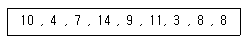
- 3
- 5
- 6
- 11
(정답률: 알수없음)
62. 회귀분석 결과 분산분석표에서 잔차제곱합(SSE)은 60, 총제곱합(SST)은 240 임을 알았다. 이 회귀모형에서 결정 계수는 얼마인가?
- 0.25
- 0.5
- 0.75
- 0.95
(정답률: 알수없음)
63. X1, X2, ···, X9 를 정규분포 N(μ,σ2)에서 추출한 표본크기가 9 인 확률표본이라 할 때,
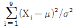
의 확률분포는 무엇인가?- 정규분포
- 자유도가 9 인 X2 분포
- 자유도가 8 인 X2 분포
- 자유도가 8 인 t 분포
(정답률: 알수없음)
64. 두 집단의 평균의 차이에 관하여 신뢰구간을 구하거나 검정하기 위해서는, 두 집단의 표본에서 구한 통계량의 차이, 즉
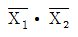
의 표준편차를 구할 필요가 있다. 표본의 특성과 통계량이 다음과 같을 때, 의 표준편차는? (단, 두 집단의 모집단은 정규분포를 이루고 분산은 서로 같다.)
의 표준편차는? (단, 두 집단의 모집단은 정규분포를 이루고 분산은 서로 같다.)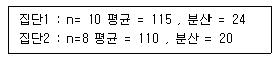
- 2.21
- 2.37
- 2.53
- 2.85
(정답률: 알수없음)
65. 봉급생활자의 연봉과 근속년수, 학력간의 관계를 알아보기 위하여 회귀분석을 실시하기로 한다. 그런데 근속년수는 양적변수이지만 학력은 중졸, 고졸, 대졸로 수준 수가 3개인 지수변수(또는 가변수) 자료일 때 적합한 다중회귀모형을 만들기 위한 설명변수 개수는 모두 몇 개일까?
- 1
- 2
- 3
- 4
(정답률: 알수없음)
66. K라는 양궁선수는 화살을 쏘았을 때 과녁의 중심에 맞출 확률이 0.6 이라고 한다. 이 선수가 총 7번 화살을 쏜다면 과녁의 중심에 평균 몇 회 맞출까?
- 6.00
- 8.57
- 1.68
- 4.20
(정답률: 40%)
67. 다음의 6개의 측정값에 대한 산술평균과 중위수는?
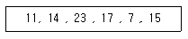
- 14.5, 14.5
- 14.5, 14
- 14.5, 15
- 15, 14
(정답률: 47%)
68. 평균이 μ이고 분산이 σ2 = 9 인 정규모집단에서 크기가 100 인 확률표본에서 얻은 표본평균
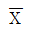
를 이용하여 가설 H0 : μ= 0 , H1 : μ ≥ 0 을 유의수준 0.⑤로 검정하는 경우 기각역은 Z≥1.64 5 이다. 여기서 검정통계량 Z에 해당하는 것은?- 100
 / 9
/ 9 - 100
 / 3
/ 3 - 10
 / 9
/ 9 - 10
 / 3
/ 3
(정답률: 알수없음)
69. 사상 A와 B는 서로 배반사상이다. P(A)＞0 이고 P(B)＞0일 때, 사상 A와 B에 대한 아래 설명 중 맞는 것은?
- A와 B는 독립이다.
- A와 B는 종속이다.
- A와 B는 독립일 수도 종속일 수도 있다.
- A와 B는 독립도 종속도 아니다.
(정답률: 알수없음)
70. 관측치 X들이 정규분포를 따르고, 16개의 자료로부터
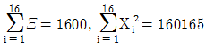
임을 얻었을 때, H0:σ2=15 , H1: σ2＞15을 유의수준 5%에서 검정하기 위한 검정통계량의 값과 비교할 기준값을 바르게 나열한 것은?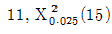
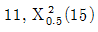
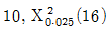
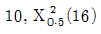
(정답률: 알수없음)
71. 단순선형회귀모형 Yi=β0+β1Xi+ɛi에 대한 설명 중 틀린 것은?
- 두 변수 X, Y의 관계식은 선형식으로 표현될 수 있어야 한다.
- 최소자승법에 의한 모수 추정량은 모든 선형불편추정량중에서 최소분산을 갖는다.
- 모형의 유의성 여부는 F- 검정에 의해 판단한다.
- 결정계수 R2은 총변동 중에서 회귀선에 의해 설명되는 비율을 측정한 값이며 두 변수간 상관계수와는 무관하다.
(정답률: 알수없음)
72. 두 연속적 변인인 실업률과 자살율간의 상관계수가 Y= 40일 경우, 실업률에 의해서 결정되는 자살율의 총분산의 비율인 결정계수(coefficient of determination)는 얼마인가?
- 0.40
- 0.16
- 0.20
- 0.12
(정답률: 알수없음)
73. 두 변수에 대한 분할표(Contingency table)에서 두 변수의 독립성 여부를 검정하기 위하여 카이자승(Chi-square) 검정을 실시하고자 할 때 필요한 항목만으로 구성된 것은?
- 실측도수, 이론도수, 자유도, 평균
- 실측도수, 이론도수, 자유도, 분산
- 실측도수, 이론도수, 자유도, 유의수준
- 실측도수, 이론도수, 변동계수, 유의수준
(정답률: 55%)
74. 만약 신호 값 μ가 A로부터 보내진다면, 장소 B에서 받는 값은 평균이 μ이고 표준편차가 2인 정규분포르 따른다. 장소 B에서 사람들은 신호 값 μ= 8 이 오늘 보내진다고 한다. 동일한 신호가 독립적으로 5회 보내지고 장소 B에서 받은 평균값이  = 9.5 일 때, 다음 가설검정의 결과로 옳은 것은? (단, Z0.025 = 1.96 , Z0.⑤ = 1.64) (문제 오류로 실제 시험에서는 모두 정답처리 되었습니다. 여기서는 1번을 누르면 정답 처리 됩니다.)
= 9.5 일 때, 다음 가설검정의 결과로 옳은 것은? (단, Z0.025 = 1.96 , Z0.⑤ = 1.64) (문제 오류로 실제 시험에서는 모두 정답처리 되었습니다. 여기서는 1번을 누르면 정답 처리 됩니다.)
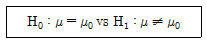
- 유의수준 α=0.1 인 경우 귀무가설을 기각한다.
- 유의수준 α=0.⑤ 인 경우 귀무가설을 기각한다.
- 유의수준 α=0.1 인 경우 귀무가설을 채택한다.
- 유의수준 α=0.⑤ 인 경우 귀무가설을 채택한다.
(정답률: 62%)
75. 발표된 의학통계에 의하면 질병으로 인한 사망 중 네가지 주요 질병 A, B, C, D에 의한 사망률은 각각 15%, 21%, 18%, 14%라고 한다. 어떤 병원에서 질병으로 인한 사망자 308 명을 분류해 보니 다음 표와 같았다. 이 병원에서의 사망 비율은 발표된 사망 비율과 다르다고 주장할 수 있는지 α = 0.⑤ 에서 검정하고자 한다. 이 문제에 대한 적합한 검정통계량 값은?
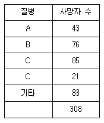
- 29.87
- 31.77
- 38.59
- 42.12
(정답률: 알수없음)
76. 다음 도표들 중에서 최소값, 최대값, 중앙값, 상사분위수, 하사분위수 등의 정보를 이용하여 자료를 도표로 나타내는 방법은?
- 도수다각형
- 히스토그램
- 리그레쏘그램
- 상자그림
(정답률: 알수없음)
77. 분산분석을 위한 모형에서 오차항에 대한 가정으로 해당되지 않는 것은?
- 정규성
- 독립성
- 일치성
- 등분산성
(정답률: 알수없음)
78. 다음 중 이산형 변수(discrete variables)의 변이 (variation)를 측정해 주는 것은?
- 다양성 지수 (Index of Diversity)
- 범위 (range)
- 분산 (variance)
- 표준편차 (standard deviation)
(정답률: 알수없음)
79. 소득은 보통 교육과 비례한다고 한다. 하지만, 우리 사회와 같이 남녀의 직업불평등이 있는 사회에서는 소득은 성별에 따라 크게 차이가 난다. 이것을 검정하기 위해 “소득=α+β1교육+β2 성별+β3 교육·성별+ε“의 회귀식을 설정하고 분석한 결과 도출된 통계량은 모두 유의미하고, 그 값은 a=6 .0 , b1=2.5 , b2 = 1.5 , b3=0.5 이었다. 남자의 회귀식을 구하면? (단, 소득의 단위는 100 만원, 교육의 단위는 1년, 성별은 여자=0 , 남자= 1)
- 소득=7 .5+3 .0교육
- 소득=6 .0+3 .0교육
- 소득=7 .5+2 .5교육
- 소득=6 .0+2 .5교육
(정답률: 알수없음)
80. 한국 남성의 10%는 폐암에 걸린다고 한다. 그런데, 폐암에 걸린 남성들 중 80%가 흡연자인 반면, 폐암에 걸리지 않은 남성들 중에는 40%만이 흡연자라 한다. A라는 어떤 흡연남성이 폐암에 걸릴 확률은 대략 얼마일까?
- 약 15%
- 약 18%
- 약 21%
- 약 25%
(정답률: 알수없음)
81. 모평균 μ에 대한 추론을 위해 조사한 결과 (X1, X2, …,X100)를 얻었다. 모표준편차가 8 로 알려져 있고,
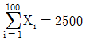
일 때, μ에 대한 95% 신뢰구간은? (단, 소수이하 셋째 자리에서 반올림하고, Z ∼N(0 , 1) 일 때, P(Z＞1.96)=0 .025 , P(Z＞1.65)=0 .⑤) (문제 오류로 실제 시험에서는 모두 정답처리 되었습니다. 여기서는 1번을 누르면 정답 처리 됩니다.)- (24.02, 25.98)
- (24.18, 25.83)
- (24.90, 25.10)
- (24.92, 25.08)
(정답률: 알수없음)
82. 주사위를 던져 나온 눈의 수를 X라 하면 X의 기대값은 얼마인가?
- 3
- 3.5
- 6
- 2.5
(정답률: 60%)
83. 다음 중 표본의 크기의 결정과 관련되어 있지 않은 요인은? (문제 오류로 실제 시험에서는 모두 정답처리 되었습니다. 여기서는 1번을 누르면 정답 처리 됩니다.)
- 신뢰도
- 오차의 크기
- 표준편차
- 임계치
(정답률: 알수없음)
84. 상관관계(correlation) 에 대한 설명 중 옳은 것은?
- 두 변수 간에 강한 상관관계가 존재하면 두 변수는 서로 독립적이라고 한다.
- 두 변수 간의 상관관계로부터 인과관계를 도출할 수 있다.
- 두 변수 간에 상관관계가 없다면 피어슨 상관계수의 값은 0 이다.
- 피어슨 상관계수의 값은 항상 0 이상, 1 이하이다.
(정답률: 알수없음)
85. 어느 학급 30 명의 학생 중 가정에 PC를 보유하고 있는 학생이 20 명, 보유하고 있지 않은 학생이 10명 있는 경우, 전체 학생 중 5명을 비복원 랜덤추출하여 PC를 보유하고 있는 학생수를 확률변수 X라고 정의하면 확률변수 X의 분포는?
- 이항분포
- 초기하분포
- 포아송분포
- 정규분포
(정답률: 알수없음)
86. 2 차원 교차표에서 한 변수는 5개, 다른 한 변수는 4개의 범주로 구성되어 있다. 카이제곱검정을 한다면 이 검정에서 자유도는 얼마인가?
- 5
- 12
- 9
- 4
(정답률: 알수없음)
87. 퀴즈 게임에서 우승한 당신은 주사위를 던져서 그 나온 숫자에 100,000원을 곱한 상금을 받게 되었다. 그런데 그 주사위에는 홀수가 없이 짝수만이 있다. 즉 2가 2면, 4가 2면, 6이 2면인 것이다. 당신이 그 주사위를 던졌을때 받게 될 상금의 기대값과 표준편차는 얼마인가? (문제 오류로 실제 시험에서는 모두 정답처리 되었습니다. 여기서는 1번을 누르면 정답 처리 됩니다.)
- 기대값=350,000원, 표준편차=97,000원
- 기대값=350,000원, 표준편차=94,000원
- 기대값=400,000원, 표준편차=97,000원
- 기대값=400,000원, 표준편차=94,000원
(정답률: 알수없음)
88. 어떤 시스템은 각각 독립적으로 작동하는 n개의 성분으로 구성되어 있다. 이 시스템은 그 성분 중, 반 이상 작동을 하면 효과적으로 작동을 한다. 각 성분의 작동확률을 ρ라고 하면 5개의 성분으로 구성된 시스템이 3개의 성분으로 구성된 시스템보다 더 효과적으로 작동을 하기 위한 ρ값의 조건은?
- ρ＞1/5
- ρ＞1/4
- ρ＞1/3
- ρ＞1/22
(정답률: 알수없음)
89. 어느 회사원이 승용차로 출근하는 길에 신호등이 5개 있다고 한다. 각 신호등에서 빨간등에 의해 신호 대기할 확률은 0.2 이고, 각 신호등에서 신호 대기 여부는 서로 독립적이라고 가정한다. 어느 날 이 회사원이 5개의 신호등 중 1개의 신호등에서만 신호대기에 걸리고 출근할 확률을 구하는 식은?
- (0.2)1
- 1- (0.8)5
- (0.2)1 (0.8)4
- 5 (0.2)1 (0.8)4
(정답률: 알수없음)
90. 자료의 대표값으로 평균 대신 중앙값(median)을 사용하는 가장 적절한 이유는?
- 평균은 음수가 나올 수 있다.
- 대규모 자료의 경우 평균은 계산이 어렵다.
- 평균은 극단적인 관측값에 영향을 많이 받는다.
- 평균과 각 관측값의 차이의 총합은 항상 0 이다.
(정답률: 알수없음)
91. 정규분포 N(θ, 16)로부터 n 개의 확률을 얻었다. 가설 H0 : θ = 10 에 대한 H1 : θ ＞10을 검정하고자 한다. 만일
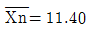
그리고 ⊕(0.35)=0.6404, ⊕(1.75)=0.9599 이라면 α=0.0 1과 α=0.⑤ 일 때 검정결과는? (단, ⊕(t)=P(Z＜=t), Z∼N(0, 1)) (문제 오류로 실제 시험에서는 모두 정답처리 되었습니다. 여기서는 1번을 누르면 정답 처리 됩니다.)- α=0.01과 α=0.⑤ 일 때 모두 귀무가설 기각
- α=0.01과 α=0.⑤ 일 때 모두 귀무가설 채택
- α=0.01 일 때는 귀무가설 기각, α=0.⑤ 일 때는 귀무가설 채택
- α=0.01 일 때는 귀무가설 채택, α=0.⑤ 일 때는 귀무가설 기각
(정답률: 알수없음)
92. 다음 정규분포의 특성 중 옳지 않은 것은?
- 봉우리가 한 개인 분포이다.
- 좌우대칭이다.
- 곡선아래의 면적이 1이다.
- 분포 양측의 꼬리는 X축에 맞닿는다.
(정답률: 알수없음)
93. 두 집단 자료의 단위가 다르거나 단위는 같지만 평균의 차이가 클 때 두집단 자료의 산포를 비교하는데 변동계수(Coefficient of Variation)를 사용한다. 얻은 자료의 산술평균이 20이고 분산이 16 일 때 변동계수는 얼마인가?
- 4/20
- 16/20
- 20/4
- 20/16
(정답률: 알수없음)
94. 모평균이 100, 모표준편차가 20인 어느 무한모집단에서 크기 100의 단순임의표본을 얻었다. 이 때 표본평균
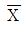
의 평균과 표준편차는 얼마인가?- 평균 = 100 , 표준편차 = 2
- 평균 = 1, 표준편차 = 2
- 평균 = 100 , 표준편차 = 0.2
- 평균 = 1, 표준편차 = 0.2
(정답률: 알수없음)
95. 가설검정을 할 때 대립가설(H1)이 사실인 상황에서 귀무가설(H0)을 기각할 확률은?
- 검정력
- 제2종의 오류
- 유의수준
- 신뢰수준
(정답률: 알수없음)
96. 모집단평균을 추정하기 위하여 단순임의추출법(simplerandom sampling)으로 표본을 추출하고자 할 때 동일조건 하에서 복원(with-replacement)추출의 경우 표본의 수를 n0, 비복원(without-replacement)추출의 경우 표본의 수를 n이라 하면 이들의 관계는?
- n0＞n
- n0＜n
- n0 = n
- 알 수 없다.
(정답률: 알수없음)
97. 어느 이동통신 회사에서 20 대를 대상으로 자사의 선호도에 대한 조사를 하려한다. 전년도 조사에서 선호도가 40%이었다. 금번의 조사에서 선호도에 대한 추정의 95% 오차한계가 4% 이내로 되기 위한 표본의 최소 크기는? (단, Z∼N(0 ,1)일 때, P(Z＞1.96)=0.025) , P(Z＞1.65)=0.⑤ )
- 409
- 426
- 577
- 601
(정답률: 46%)
98. 다음 중 표를 잘못 해석한 것은?
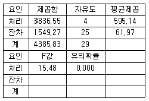
- 분산분석에 사용된 집단의 수는 5개이다.
- 분산분석에 사용된 케이스의 수는 30개이다.
- 각 처리별 평균값의 차이가 있다.
- 만약 F값이 주어지지 않는다면 가설 검증이 곤란하다.
(정답률: 알수없음)
99. 다음은 일원배치 분산분석 결과표이다. 위의 표에서 얻는 결과와 다른 것은?
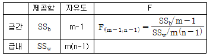
- 분석된 자료의 형태는 m개의 독립표본으로 이루어져 있다. 각각의 독립표본에 n개의 관측값이 있다.
- F값은 다음의 가설을 검정할 수 있다.
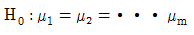
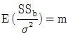
, (단, Xij~N(μ, σ2))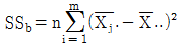
(정답률: 50%)
100. 모평균 μ를 신뢰도 95%로 추정하고자 할 때 오차를 1,000원 이내로하려면 표본 크기는 얼마로 해야 하는가?
- 약 160 이상
- 약 430 이상
- 약 250 이상
- 약 210 이상
(정답률: 알수없음)